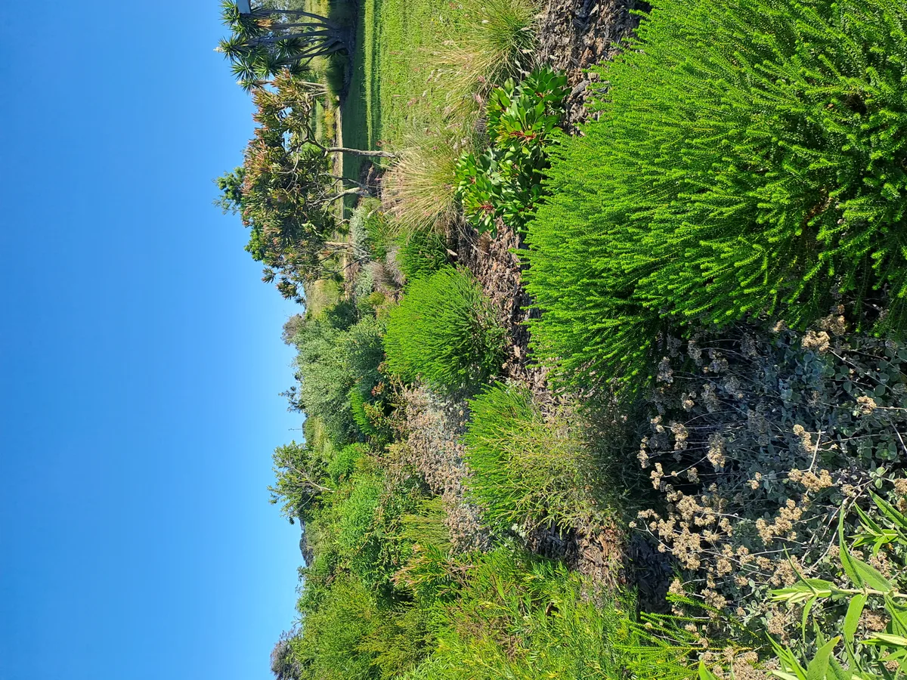

Landscaping in George: Sustainable Garden Design on the Garden Route
George is the largest town on the Garden Route and a hub for the wider region. Its gardens span diverse microclimates — from wind-exposed coastal properties to sheltered plots beneath the Outeniqua Mountains. Ecological design here means understanding which system you're working in, and designing accordingly.

Six Kingdoms brings ecological landscape design to residential and estate properties across George. We work from first principles: understanding your site's soils, water patterns, sun exposure, and existing biodiversity before we design anything. The result is a garden that feels rooted in its place — not transplanted from a catalogue.
George's Landscape Character
George sits between the Outeniqua Mountains to the north and the Indian Ocean to the south. This means properties can vary enormously within a short distance. Gardens on the lower coastal plateau deal with salt-laden southwesterly winds and sandy, well-draining soils. Properties on the mountain slopes face heavier rainfall, cooler temperatures, and more complex topography.
The George area lies at the transition between Western Cape fynbos and Eastern Cape subtropical thicket. Many properties carry a mix of both biomes, particularly where disturbed land has been colonised by exotic species. The first task on any George landscaping project is often to understand what was here before, and what naturally wants to grow here now.
Invasive alien plants are a significant issue across the George municipality. Rooikrans (Acacia cyclops), Black wattle (Acacia mearnsii), and Port Jackson willow (Acacia saligna) dominate large areas of disturbed land. Clearing and sustained follow-up are essential before any meaningful indigenous planting can take hold.
Ecological Garden Design for George Properties
An ecological garden in George works with the natural systems of the site. For most residential properties this means:
- Soil assessment and amendment to improve drainage or water retention depending on the site
- Selection of locally-adapted indigenous species — primarily fynbos and transitional thicket plants
- Water-wise design that reduces irrigation demand once plants are established (typically after two seasons)
- Erosion control on slopes, particularly in the steeper mountain-foot areas of George
- Habitat creation for indigenous birds and insects — including nesting sites, food plants, and water features
Six Kingdoms has designed and managed gardens in the George area including the House Dyer project — a residential ecological garden that integrates indigenous planting with considered hard landscaping, creating a coherent outdoor space that requires minimal maintenance and supports local biodiversity.
Invasive Plant Clearing in George
Many George properties inherited significant invasive plant loads from previous land uses. Six Kingdoms offers professional invasive plant clearing including alien tree felling, root removal, follow-up chemical treatment of regrowth, and controlled disposal. We work in compliance with NEMBA regulations and can advise on Working for Water programme eligibility for larger landholdings.
After clearing, we typically design a restoration planting programme to stabilise the soil and prevent reinvasion. This is often more cost-effective than simply clearing and waiting — bare ground is an open invitation for weeds.
EcoPools in George
George's climate — warm summers, moderate winters, and year-round rainfall — supports excellent biological water filtration, making it a strong environment for natural swimming pool installation. A natural pool in a George garden is a low-maintenance, chemical-free alternative to a conventional pool, and it integrates visually with indigenous planting in a way that chlorinated concrete pools rarely do.
Six Kingdoms installs EcoPools in George in partnership with EcoPools Africa. View our natural pool portfolio →
Working in George
We serve clients across the George municipal area including Heather Park, Loerie Park, Pacaltsdorp surrounds, and outlying estates on the mountain and coastal edges. Whether you need a full ecological design brief, invasive clearing, or advice on indigenous planting for an established garden, the starting point is a conversation.
Designing for George
Every garden project starts with a site visit. Tell us about your property and what you're hoping to achieve.
Get in Touch →